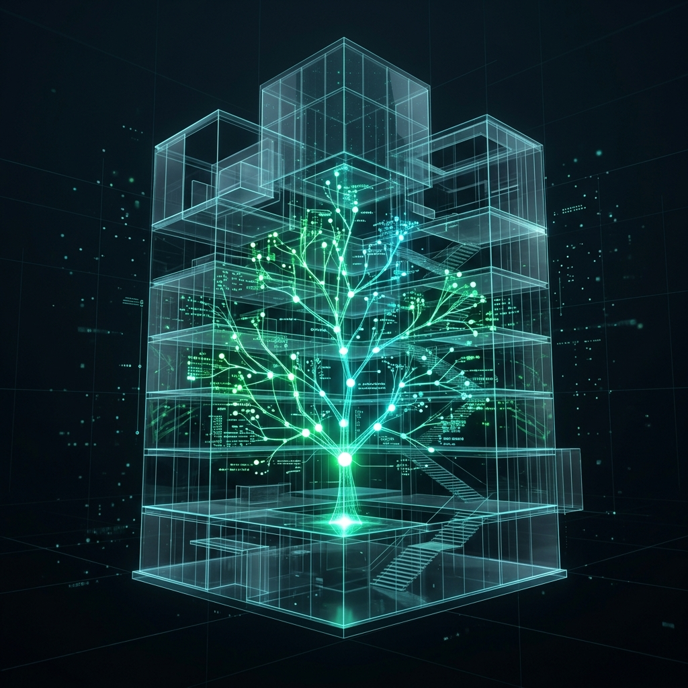
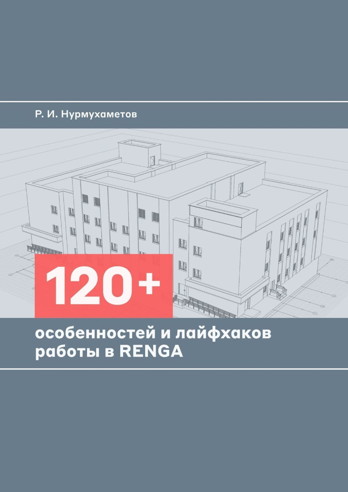
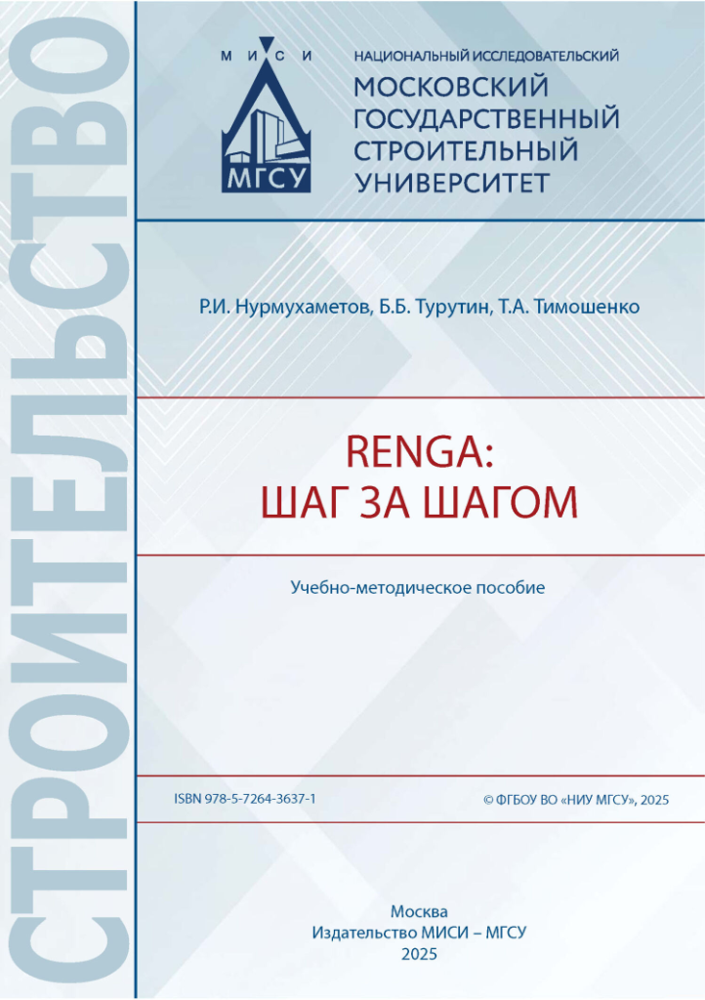

// MISCELLANEOUS
Прочее
Различные дополнительные материалы, полезные и не очень, не вошедшие в основные разделы.

// Прочее
Литература

120+ особенностей и лайфхаков работы в Renga
Р.И. Нурмухаметов
Сборник практических советов, неочевидных приемов и обходных путей для продвинутых пользователей Renga, желающих ускорить свою работу и избежать частых ошибок.

Renga: шаг за шагом
Р.И. Нурмухаметов, Т.А. Тимошенко, Б.Б. Турутин
Подробное руководство по освоению BIM-системы Renga с нуля. От базовых принципов до создания полноценной информационной модели.